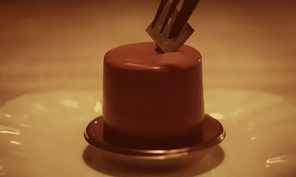

TastyTable - Recipe Collection
Chocolate Cake

Ingredients:
- 1 and 3/4 cups all-purpose flour
- 1 and 1/2 teaspoons baking powder
- 1 and 1/2 teaspoons baking soda
- 3/4 cup unsweetened cocoa powder
- 2 cups granulated sugar
- 1 teaspoon salt
- 2 large eggs
- 1 cup whole milk
- 1/2 cup vegetable oil
- 2 teaspoons vanilla extract
- 1 cup boiling water
Instructions:
- Preheat your oven to 350°F (175°C). Grease and flour two 9-inch round cake pans.
- In a large bowl, sift together the flour, baking powder, baking soda, cocoa powder, sugar, and salt.
- Add the eggs, milk, oil, and vanilla extract to the dry ingredients. Mix until well combined.
- Gradually add the boiling water, mixing continuously. The batter will be thin, but that's okay.
- Pour the batter into the prepared pans and bake for 30 to 35 minutes, or until a toothpick inserted into the center comes out clean.
- Allow the cakes to cool in the pans for 10 minutes, then transfer them to a wire rack to cool completely.
- Frost and decorate the cakes as desired. Enjoy your delicious Chocolate Cake!